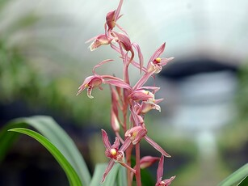

|
|
| 花種介紹 |
|
喜姆比地蘭，學名為大花蕙蘭 (Cymbidium)，又稱虎頭蘭、新美娘蘭，是蘭科蕙蘭屬中栽培的附生蘭花總稱。
其特色為花朵碩大，花色豐富，包括粉、紅、黃、綠、褐、白等，常一花梗上有多朵花。
大花蕙蘭是經由人工雜交培育而成的品種群，具有國蘭的幽香典雅與洋蘭的色彩豐富的優點，深受國際花卉市場歡迎。
|
| 栽培管理 |
|
喜姆比地蘭（大花蕙蘭）的栽培管理重點在於光照、溫度、水分、肥料和通風。 應在不被陽光灼傷的前提下提供充足光照，夏季遮光，秋季增加光照。
保持18-30℃的生長溫度，並在花芽分化時控制夜間溫度，以避免花蕾脫落。 澆水需見乾見濕，約60%的濕度，避免積水。
夏季多施氮肥，花芽期多施磷鉀肥，開花期停止施肥。 確保通風良好，並可配合噴霧增加空氣濕度。
|
|

|